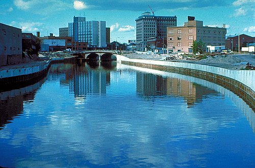

Welcome to Flint, Michigan
Flint is a city forged in strength and powered by reinvention. Known as the birthplace of General Motors, Flint’s legacy as an industrial powerhouse continues to inspire its future. In recent years, the city has embraced revitalization through grassroots innovation, a thriving arts community, and cultural institutions like the Flint Institute of Arts and Sloan Museum. Surrounded by beautiful parks and nature preserves, Flint blends urban grit with natural beauty—and above all, it remains a testament to the resilience and pride of the people who call it home.
Top 5 Things to Do in Flint
- Visit the Flint Institute of Arts for world-class exhibits.
- Explore science and history at the Sloan Museum of Discovery.
- Wander the Applewood Estate gardens and historic home.
- Stroll through For-Mar Nature Preserve and Arboretum.
- Enjoy local food and music at the Flint Farmers’ Market.
Flint at a Glance
| Category | Detail | Notes |
|---|---|---|
| Population | 81,000 | 2023 Census estimate |
| Incorporated | 1855 | Founded as a lumbering and carriage manufacturing town |
| Region | Southeastern Michigan | Along the Flint River in Genesee County |
| Classification | Urban | Legacy industrial city undergoing revitalization |
| Average Income | Below state average | Ongoing recovery from economic shifts and water crisis |